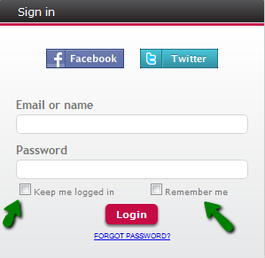

"User Remember Me Type" is a GAM Repository property which purpose is to specify the way that the Login WEB object will be presented to the user. Depending on this property, the login can be renewed automatically when the session expires or just the login information can be presented to the user to be confirmed. If the login session is kept for a specific time or ever, the application will have more security risks. Values
DescriptionTake as an example the "GAMExampleLogin" object provided in the GAM examples Library. Note in the "GAMExampleLogin" object, the following code in the Refreh Event:
&Repository = GAMRepository.Get()
&RememberMe.Visible = False
&KeepMeLoggedIn.Visible = False
Do Case
Case &Repository.UserRememberMeType = GAMRepositoryRememberUserTypes.Login
&RememberMe.Visible = True
Case &Repository.UserRememberMeType = GAMRepositoryRememberUserTypes.Authentication
&KeepMeLoggedIn.Visible = True
Case &Repository.UserRememberMeType = GAMRepositoryRememberUserTypes.Both
&RememberMe.Visible = True
&KeepMeLoggedIn.Visible = True
EndCase
&RememberMe and &KeepMeLoggedIn are check boxes. The purpose of these check boxes is the following: 1. &RememberMe : If checked, when the session expires, the user is presented the GAMExampleLogin object, with the last login information instantiated. 2. &KeepMeLoggedIn: If checked, when the session expires the user is logged in automatically, the GAMExampleLogin object is not shown. When "User Remember Me Type" = None, none of these check boxes is shown in GAMExampleLogin object. See the following figure which shows both options in runtime.  Note that you can get the value selected by the user (if he checked &RememberMe or &KeepMeLoggedIn) by executing the following code: GAMRepository.GetRememberLogin(&LogOnTo, &UserName, &UserRememberMe, &Errors) //&LogOntO is the Authentication Type and &Errors is of GAMError Collection data type. &UserRememberMe is returned. If &UserRememberMe is "Login", the &UserName is loaded with the corresponding value, as well as &LogOnTo (with the Authentication Type which was set in the last login). In the login event (Enter Event) of GAMExampleLogin, the following code is executed. The values of &RememberMe and &KeepMeLoggedIn variables are used to perform the login (are used as parameters of the login). GAM checks that the login can be done using the values passed in the parameters (according to the value set to "User Remember Me Type" of the Repository).
If &KeepMeLoggedIn
&AdditionalParameter.RememberUserType = iif(&KeepMeLoggedIn, GAMRememberUserTypes.Authentication, GAMRememberUserTypes.None)
Else
If &RememberMe
&AdditionalParameter.RememberUserType = iif(&RememberMe, GAMRememberUserTypes.Login, GAMRememberUserTypes.None)
Else
&AdditionalParameter.RememberUserType = GAMRememberUserTypes.None
Endif
Endif
&LoginOK = GAMRepository.Login(&UserName, &UserPassword, &AdditionalParameter, &Errors )
NoteIf the object has Integrated Security Level property = None, the way to know if the user is logged in (in order to show some data afterwards for example), is by executing the GAM.Isvalid method. &isSessionValid = GAMSession.IsValid(&GAMSession, &GAMErrors) If not &GAMSession.IsAnonymous //The user is logged Else //The user is not logged EndIf See alsoUser Remember Me Timeout
|
| Backlinks |
| User Remember Me Timeout |